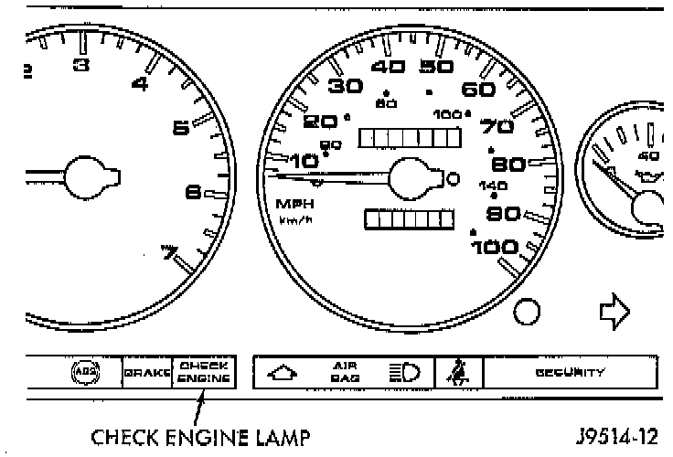

General Information

CODE NUMBER 17
The powertrain control module (PCM) has been programmed to monitor the certain following cooling system components:
^ If the engine has remained cool for too long a period, such as with a stuck open thermostat, a Diagnostic Trouble Code (DTC) number 17 can be observed at the malfunction indicator lamp. This lamp is displayed on the instrument panel as the CHECK ENGINE lamp.
MONITORED CIRCUIT
If the problem is sensed in a monitored circuit often enough to indicate an actual problem, a DTC is stored. The DTC will be stored in the PCM memory for eventual display to the service technician. If the problem is repaired or ceases to exist, the PCM cancels the DTC after 51 engine starts.
CRITERIA TO SET A TROUBLE CODE
Certain criteria must be met for a DTC to be entered into PCM memory. The criteria may be a specific range of engine rpm, engine temperature and/or input voltage to the PCM.
PURPOSE OF A DTC
A DTC indicates that the PCM has recognized an abnormal signal in a circuit or the system. A DTC may indicate the result of a failure, but never identify the failed component directly.
NOTE: It is possible that a DTC for a monitored circuit may not be entered into memory even though a malfunction has occurred.